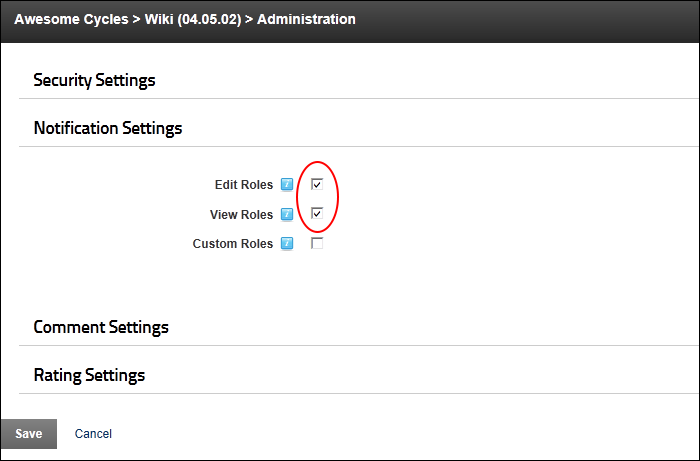
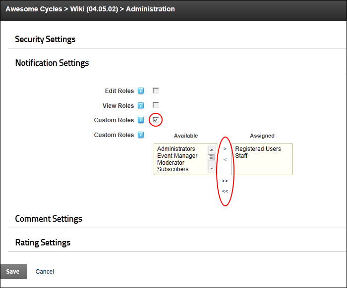

Configuring Notification Settings
How to enable user groups to receive notification when a page is updated on the Wiki module.
- Select
 Wiki Configuration from the Wiki module actions menu.
Wiki Configuration from the Wiki module actions menu.
- Expand the Notification Settings section and select from these options:
- To enable typical notifications:
- Optional. At Edit Roles, to notify all roles who are authorized to edit the Wiki.
- Optional. At View roles?, to notify all roles who are authorized to view the Wiki.

- At Custom Roles, to create custom permissions and set as follows:
- To assign a role as an editor, click on the role name in the Available list and click the Add selected Available Item to Assigned> link.
- To remove a role as an editor, click on the role name in the Assigned list and click the Remove selected Assigned Item < link.
- To assign all roles as editors, click the Add All Available Items to Assigned>> link.
- To remove all roles as editors, click the Remove All Assigned Items>> link.

- Click the Save button.